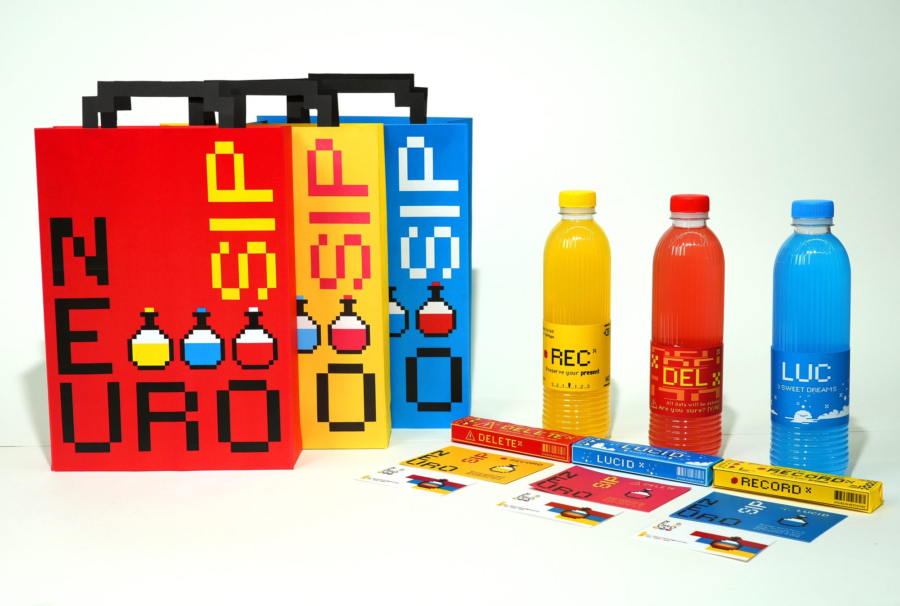
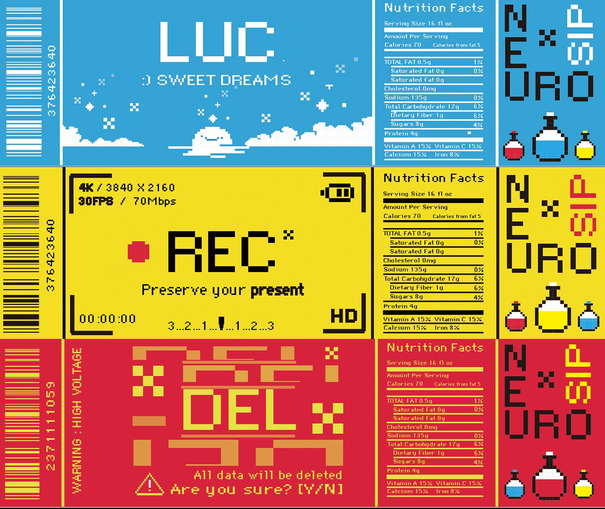
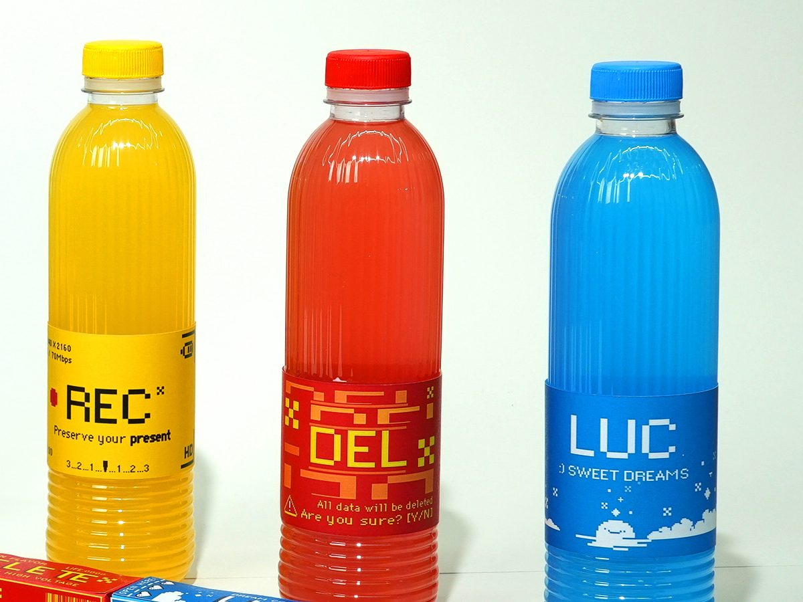
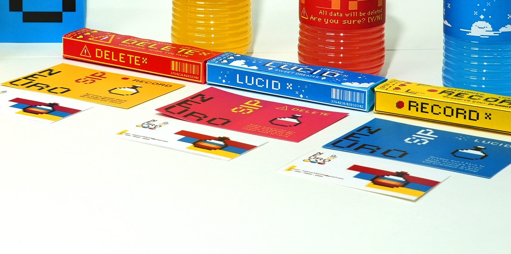

Personal project
NEURO SIP
A fictional functional drink that records, deletes or rewrites your memories, packaged in three variants.

Overview
NEURO SIP is a speculative beverage brand built around impossible cognitive functions: recording, deleting, or altering memories.
I designed a complete packaging system for three variants, REC, DEL and LUC, and carried it across bottles, boxes, shopping bags and business cards.
Each variant borrows the language of a device. REC is a camera screen that says “Preserve your present.” DEL is a system warning: “All data will be deleted. Are you sure? [Y/N]” LUC promises sweet dreams.
The project explores how design can make abstract mental processes visible, and build a whole product experience inside a fictional world.
The system
-

Three labels, three devices
LUC is a dreamy sky, REC a camera screen, DEL a warning dialog. The frame stays the same on all three: barcode, main panel, nutrition facts and the stacked NEURO SIP logo.
-

One color per memory
Yellow records, red deletes, blue dreams. The drink itself carries the color, so the three variants are easy to tell apart.
-

Boxes and cards
The boxes spell each variant out in full: DELETE, LUCID, RECORD. The business cards reuse the pixel potion.